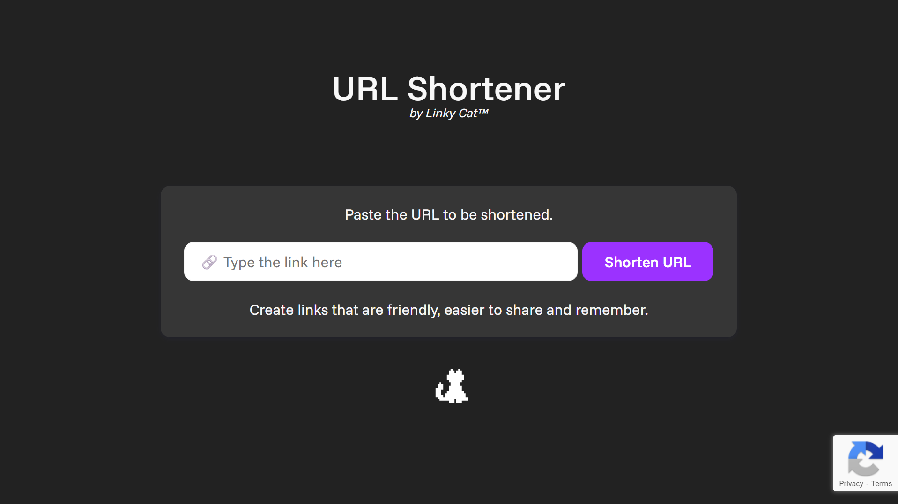
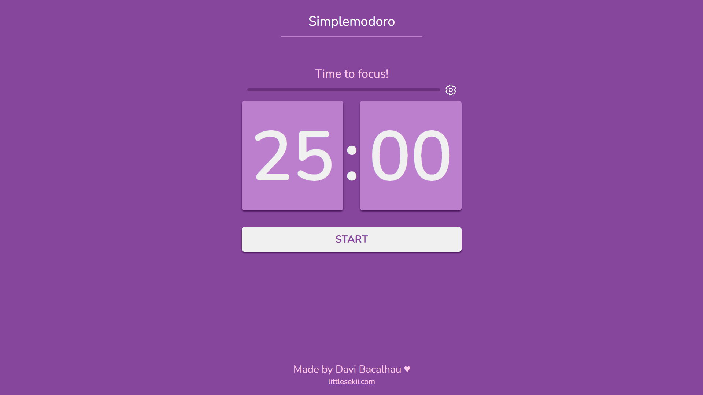

Encurtador de URL
URL Shortener da Linky Cat é uma ferramenta que permite encurtar links longos do Google, Instagram, TikTok, YouTube, X, Facebook, LinkedIn, blogs e muitos outros sites. Quando seu link curto estiver pronto, basta copiá-lo e compartilhá-lo em sites, chat, documentos, e-mails, em qualquer lugar!
Simplemodoro - Pomodoro Timer
Simplemodoro é um aplicativo web de Pomodoro Virtual. A técnica de Pomodoro é um método de gerenciamento de tempo que utiliza um cronômetro para dividir o trabalho em períodos focados, chamados de “pomodoros”, tipicamente de 25 minutos, seguidos por breves intervalos. Essa técnica ajuda a melhorar a concentração e a prevenir a fadiga.
